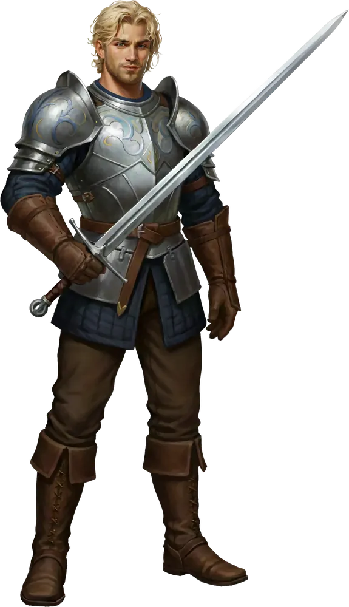
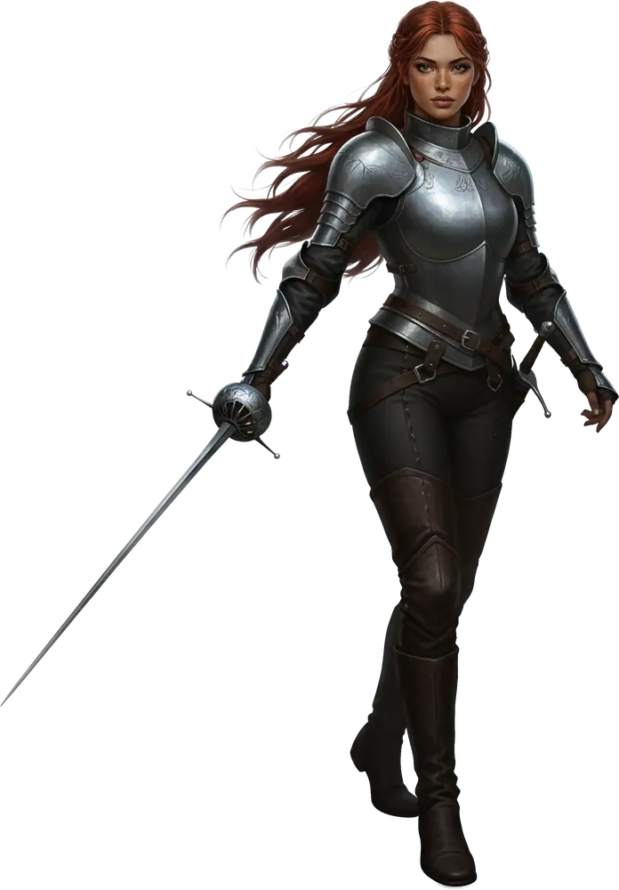
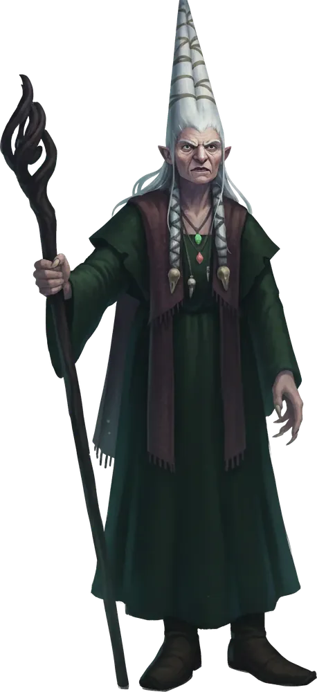
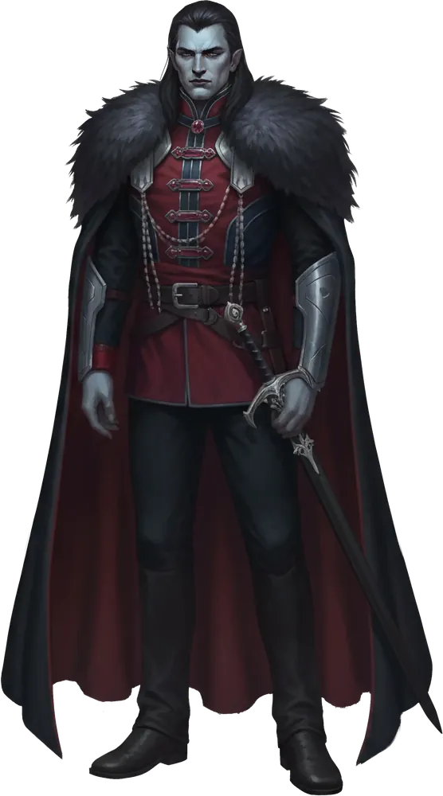
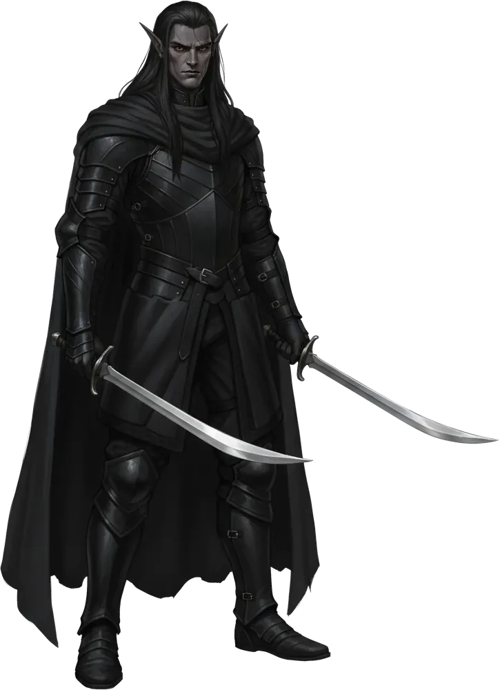
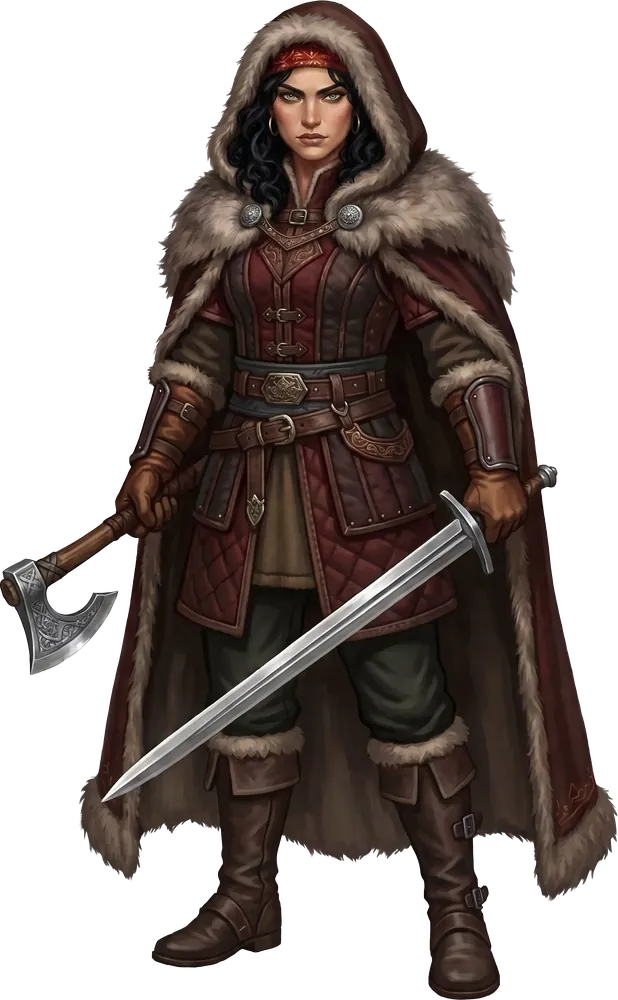
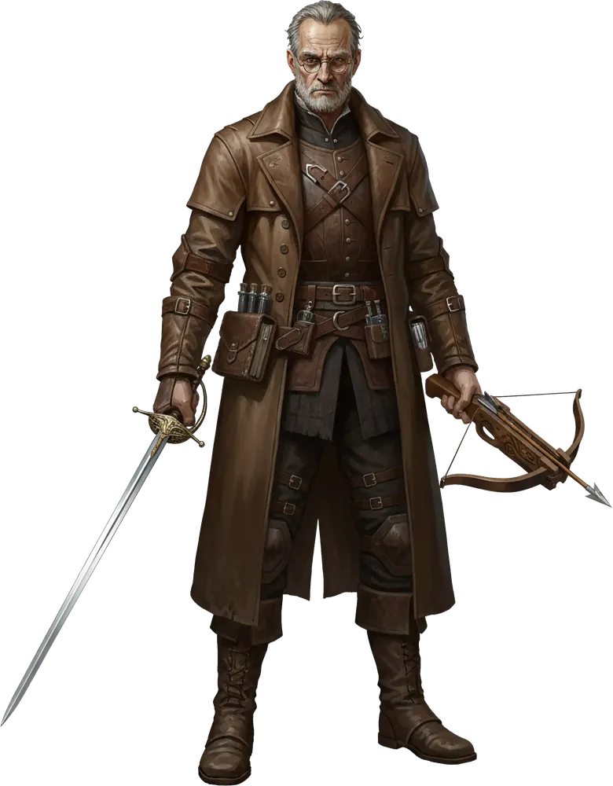
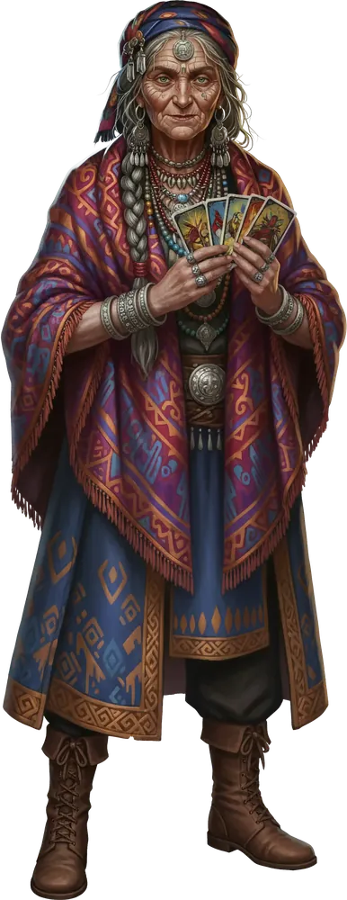
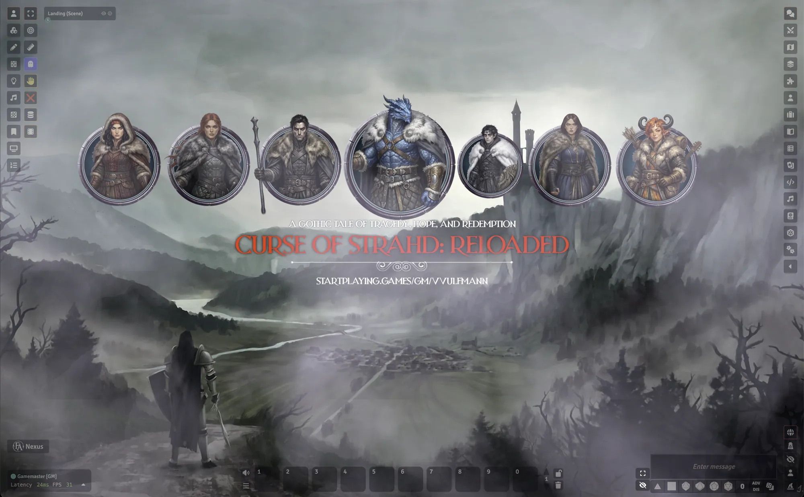

Professional Game Master
VVulfmann
Experience a table that feels like stepping into another world: lush maps for exploration and combat, dramatic music and ambience to immerse you in the scene, and NPCs who act and feel like real people.
- 5.0Rating from player reviews
- 164Paid games run on StartPlaying
- 300+Hundreds of private games run
- 6 yrsRunning games professionally
- Top GMRated a Top Game Master on StartPlaying
What you get at my table
A good mix of exploration, roleplay, and tactical combat. Some campaigns lean one way more than the others, but all three are always there.
Real production
Maps, music, ambient sound, and combat animations, all set up in Foundry VTT so the world feels alive.
Beginners welcome
New to tabletop? I'll walk you through the rules as we go. I use safety tools like the X-Card at every table.
Exploration
An old crypt, the wilds outside town, the back rooms of a thieves' guild. Expect the unexpected.
NPCs worth talking to
Every character you meet wants something. Talk to them like real people and see where it goes.
Your choices matter
The story follows what you do, planned or not. Make bold calls and live with what happens next.
Tactical combat
Detailed battle maps and fights that reward teamwork. I let the dice make the drama.
A cast worth meeting
Every NPC shows up looking the part. My Curse of Strahd game alone has more than 100 characters, each with full-body art and a matching token, ready in Foundry the moment your party meets them.








Ismark Kolyanovich · Ireena Kolyana · Baba Lysaga · Strahd von Zarovich · Rahadin · Madam Eva · Rudolph van Richten · Ezmerelda d'Avenir
Set the stage
Every campaign gets its own look in Foundry, from the moment you log in. This is the opening scene of my Curse of Strahd game: a custom landing scene, the party's portraits in matching frames, and a title card.

- Custom landing scene
- Framed party portraits
- Title card for every campaign
"The best adventures are memorable stories we tell together. For a few hours, you get to forget real life and become someone else."
What players say
Thirteen reviews on StartPlaying, all five stars.
"He finds visuals and audio that amplify the setting and makes the game extremely immersive. He spends time outside of our scheduled game day to get to know us, our characters, and our expectations of the game."
"He explains rules without making anyone feel dumb. He genuinely enjoys portraying all of the NPCs. He prepares so much artwork for each session."
"VVulfmann goes the extra mile to immerse players in a setting and actively encourages role play between everyone at the digital table."
"I was intimidated to get started as a new player, but VVulfmann helped me feel right at home!"
"Having VVulfmann as a GM has been my best experience with D&D! He allows for so much player agency while still being organized and prepared."
"I have never seen a DM do a combo of high stakes combat and hilarious shopping RP montaged together in initiative order!"
Games I run
Systems
- Dungeons & Dragons 5e
- Pathfinder 2e
- Daggerheart
- Shadowdark
- Alien: The Roleplaying Game
- Forbidden Lands
Moods
- Gothic horror
- Dark fantasy
- Gritty fantasy
- High fantasy
Styles
- Sandbox and open world
- Hexcrawls and exploration
- Dungeon crawls
- Theater of the mind
- Play by post
Where we play
- Alchemy
- D&D Beyond
- D&D Beyond Maps
- Discord
- Foundry VTT
I build tools too
Sound is a big part of my games, so I made a Foundry VTT module to help with it. It's free for any GM to use.
VVulfmann's Playlist Randomizer
Loop playlist sounds at random intervals. A wolf howl in the distance, a creaking door, thunder over the castle: each one plays, waits a bit, then plays again, so the scene never sounds like a loop.
- Adds a Randomize option to Foundry's playlist sounds
- Three frequencies, Often, Sometimes, and Seldom, all adjustable
- Staggered starts, and a sound never plays over itself
- Free and open source (MIT), for Foundry VTT v14
Pull up a chair
- $20 per player, per session
- Eastern time
Booking and payment go through StartPlaying. Have questions first, or just want to hang out? Come say hi on Discord.